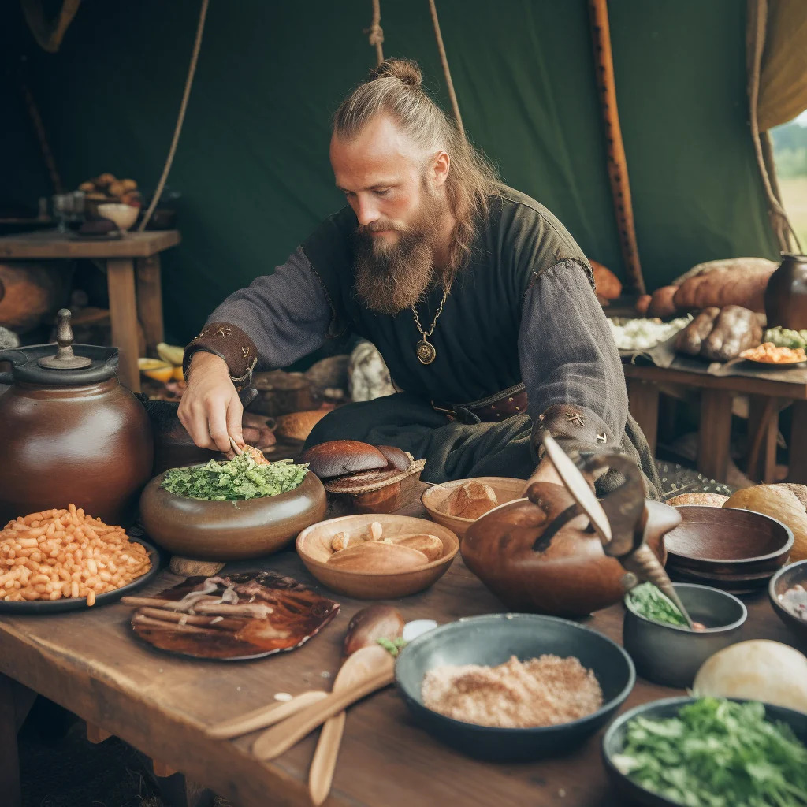

Nordic Recipes
Explore
Embark on a culinary journey through time and explore the flavors and dishes of the Viking Age. These authentic Viking recipes will give you a taste of the foods that nourished the legendary Norse warriors. From hearty stews to rustic bread, these dishes provide a glimpse into the Viking's daily life and culinary traditions.
Medieval Viking Stew

Skyr with Honey and Nuts